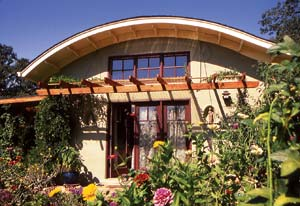

CATHERINE WANEK
Flowering vines above the patio of this California home are just getting started in the spring. By summer, their rapid growth transforms this area into a cool, shady spot. In winter, the vines die back and allow more of the sun’s heat in through the windows.